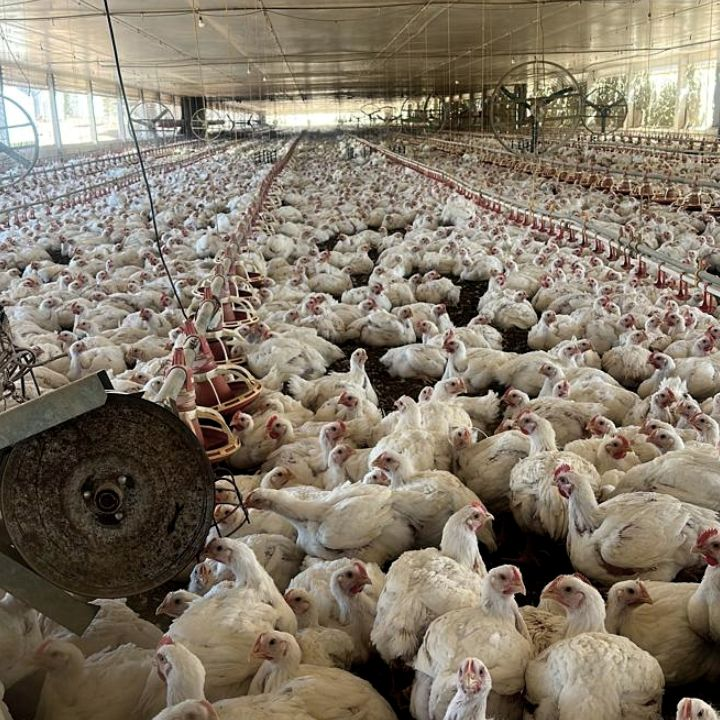

Início · Soluções · Granja Digital
AgroSaaS
Granja Digital
SaaS multi-tenant para gestão de granjas de frango de corte em parceria com integradoras — da chegada das aves ao fechamento do ciclo, com operação de campo e painéis por perfil.
A dor do cliente
Controle de ciclo, ração, mortalidade, documentos e financeiro costuma ficar em planilhas e papéis. A falta de visão unificada atrasa decisões do dono, do granjeiro e do veterinário.
Como chegamos à solução
01
Levantamento
Imersão no processo da granja: chegada, pesagem, ração, vazio sanitário e fechamento.
02
Detalhamento
Perfis (dono, admin, granjeiro, veterinário), regras de negócio e priorização por fase.
03
Desenvolvimento
Plataforma com dashboards, PWA para campo e fluxo alinhado à operação real — não a um ERP genérico.
O que o sistema faz
- Gestão de ciclos, chegada de aves, ração e mortalidade
- Painéis por perfil (dono, granjeiro, veterinário, admin)
- Financeiro e fechamento de lote
- Operação de campo com suporte offline (PWA)

LinkedIn
Inovação de verdade não acontece apenas no ar-condicionado
A equipe da Veltro Digital esteve no interior de Minas Gerais capturando requisitos in loco para a digitalização de granjas — acelerar decisões, garantir dados auditáveis e atender exigências de conformidade do agronegócio. Tecnologia só vale quando resolve a dor na ponta.
Ver post completo no LinkedIn →